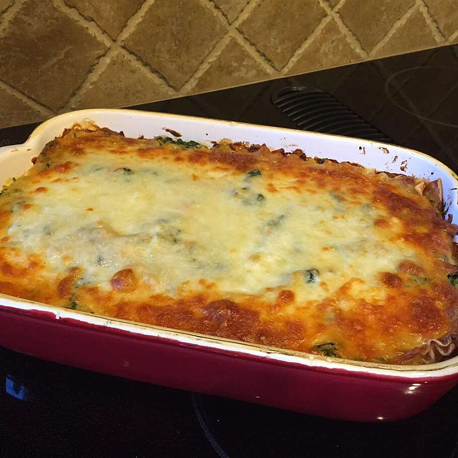

Lasagna

Description
This perfect italian dish will blow your mind. It is a mix of authenticity and simplicity.
An easy to make recipe for the whole family, Grandma included!
Ingredients
- 4 eggs
- 400g flour
- 1l tomato sauce
- 1 onion
- 700g ground beef
- 300g parmesan cheese
- 30g butter
- 30g flour
- 500ml milk
Steps
- Make the fresh pasta by making a well with your flour and placing the 4 eggs in the middle. Slowly wisk with a fork the eggs and slowly add in your flour. Combine everything and knead until smooth. Let rest for 30 minutes in the fridge, then cook for 2 minutes in salted boiling water
- While the pasta is resting in the fridge, prepare your sauce. Finely chop the onion and place it in a large pot with a bit of olive oil and set the heat to medium. Sweat the onion and add your meat in. Let the meat become brown before adding in the tomato sauce. Once the tomato sauce has been added, lower the heat to low and cook for about an hour.
- Prepare the besciamella by adding the butter to a sauce pot on medium heat. Add in the flour and whisk until combined. Now add your warm milk little by little and set your heat to low. The besciamella is done when the sauce is nice and think and without lumps.
- In a tray place a bit of your tomato sauce at the bottom to prevent the pasta from sticking. Set the pasta sheets on the tray until it's fully covered. Now add enough sauce to cover the layer of pasta, then add a bit of besciamella and parmesan cheese to cover everything. Add pasta sheets to cover this layer, rinse and repeat.
- On the last layer add more parmesan then on the other layers and place the tray in a 200 degree preheated oven for about 15 minutes or until the parmesan is completely melted and brown.
- Wait 5-10 minutes before serving.